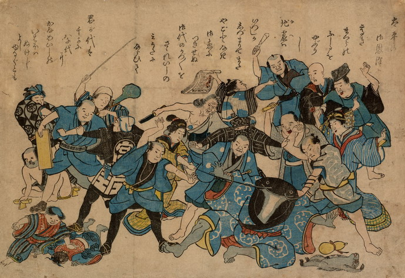

地震を引き起こした鯰の親子を、被災した人々が責める。それを震災でもうけた職人たちが制止している。鯰は青い着物をまとっており、腕脚は人間のようである。傍らには瓢箪と共に猿が仰向けに倒れている。
出典：親書誌：U426_nichibunken_0198：〔太平の御恩沢に；タイヘイノゴオンタクニ〕／日付：2010／資源識別子：U426_nichibunken_0198_0001_0000
Copyright (c)2010- International Research Center for Japanese Studies, Kyoto, Japan. All rights reserved.